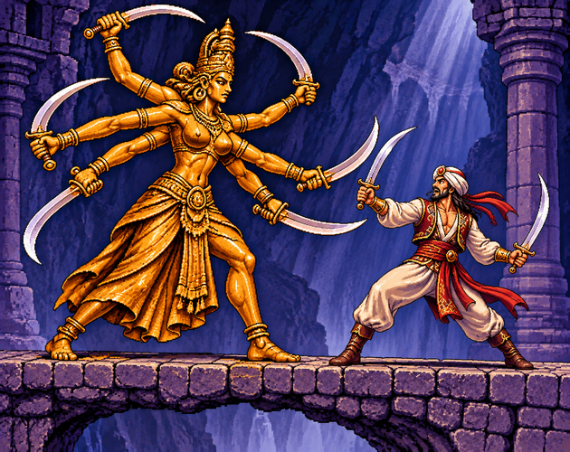

Mes jeux

Présentation du jeu
Guardian Dance est un prototype de jeu vidéo sonore en temps réel, jouable au clavier, avec un enjeu de combat effrené contre un seul adversaire redoutable.
Revivez un moment fort du film Simbad le marin lors du combat épique contre la statue animée d'une déesse antique.
Le projet met l’accent sur les sons, la stéréo, les annonces vocales et une interface graphique synthétique, afin de proposer une expérience accessible aussi bien aux joueurs voyants que non-voyants.
Lien itch.io
La page officielle du jeu sur itch.io sera indiquée ici.
Mode d'emploi
À venir…
Chronologie
- Jeudi 15 octobre 2026 à 8 h 38 : mise en place du projet.
- Samedi 17 octobre 2026 à 3 h 10 : validation de l'idée de game-play.
- Samedi 17 octobre 2026 à 10 h 40 : première mouture sonore.
- Samedi 31 octobre 2026 à 1 h 30 : animation du sprite sheet.